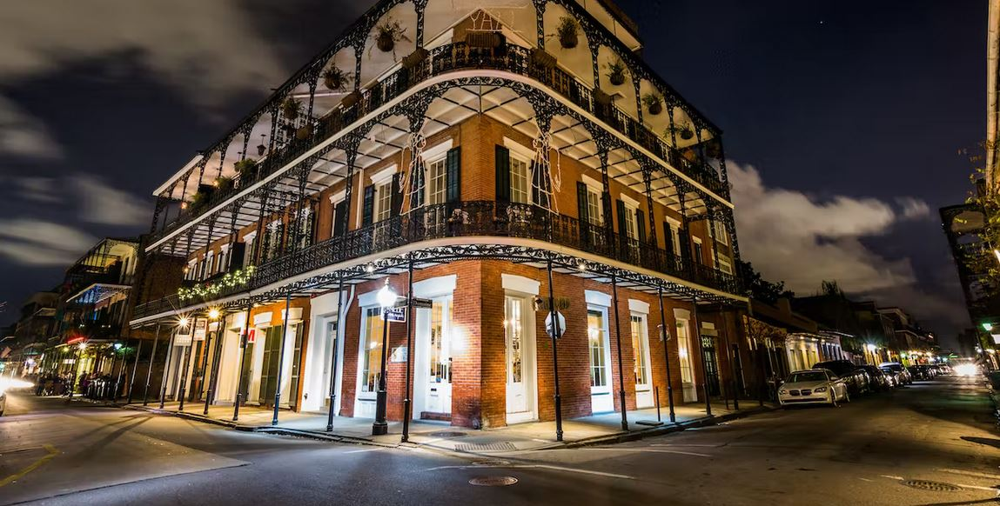
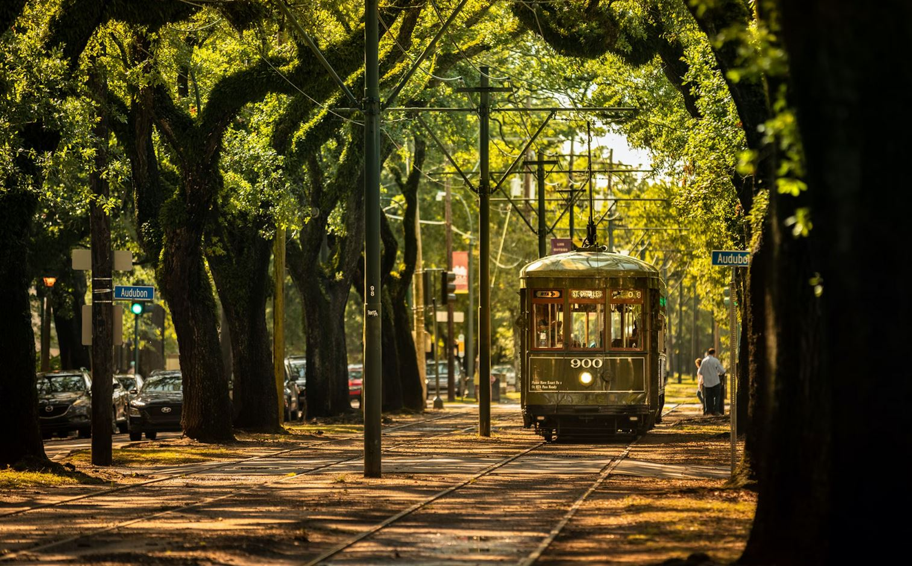
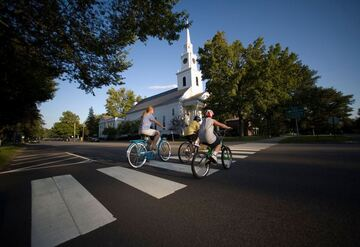
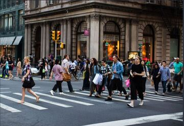
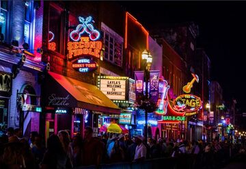
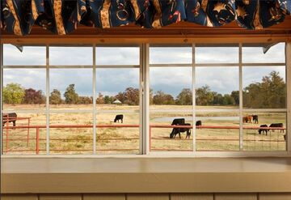
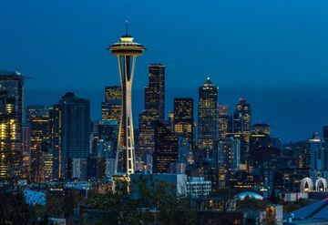

California
California, a western U.S. state, stretches from the Mexican border along the Pacific for nearly 900 miles. Its terrain includes cliff-lined beaches, redwood forest, the Sierra Nevada Mountains, Central Valley farmland and the Mojave Desert. The city of Los Angeles is the seat of the Hollywood entertainment industry. Hilly San Francisco is known for the Golden Gate Bridge, Alcatraz Island and cable cars.

Arizona
Arizona, a southwestern U.S. state, is best known for the Grand Canyon, the mile-deep chasm carved by the Colorado River. Flagstaff, a ponderosa pine–covered mountain town, is a major gateway to the Grand Canyon. Other natural sites include Saguaro National Park, protecting cactus-filled Sonoran Desert landscape. Tucson is University of Arizona territory and home to the Arizona-Sonora Desert Museum.

Illinois
Illinois is a midwestern state bordering Indiana in the east and the Mississippi River in the west. Nicknamed "the Prairie State," it's marked by farmland, forests, rolling hills and wetlands. Chicago, one of the largest cities in the U.S, is in the northeast on the shores of Lake Michigan. It’s famous for its skyscrapers, such as sleek, 1,451-ft. Willis Tower and the neo-Gothic Tribune Tower.

Massachusetts
Great memories are made in Massachusetts; no matter how you choose to make them. Indoors or outdoors; scenic views or city vibes; solo or family style; whatever moves you, whatever the season, discover it here. When you visit Massachusetts, you can have it all. The choice is yours. Whatever you like, you’ll LOVE it in Massachusetts.

New York
New York City comprises 5 boroughs sitting where the Hudson River meets the Atlantic Ocean. At its core is Manhattan, a densely populated borough that’s among the world’s major commercial, financial and cultural centers. Its iconic sites include skyscrapers such as the Empire State Building and sprawling Central Park. Broadway theater is staged in neon-lit Times Square.

Tennessee
Tennessee is a landlocked state in the U.S. South. Its capital, centrally located Nashville, is the heart of the country-music scene, with the long-running Grand Ole Opry, the Country Music Hall of Fame and Museum and a legendary stretch of honky-tonks and dance halls. Memphis, in the far southwest, is the home of Elvis Presley’s Graceland, rock-and-roll pioneering Sun Studio and the blues clubs of Beale Street.

Texas
Nothing to do in Texas.

Seattle
Seattle, a city on Puget Sound in the Pacific Northwest, is surrounded by water, mountains and evergreen forests, and contains thousands of acres of parkland. Washington State’s largest city, it’s home to a large tech industry, with Microsoft and Amazon headquartered in its metropolitan area. The futuristic Space Needle, a 1962 World’s Fair legacy, is its most iconic landmark.
{kind=link}
{kind=link}
{kind=link}
{kind=link}
{kind=link}
{kind=link}
{kind=link}
{kind=link}